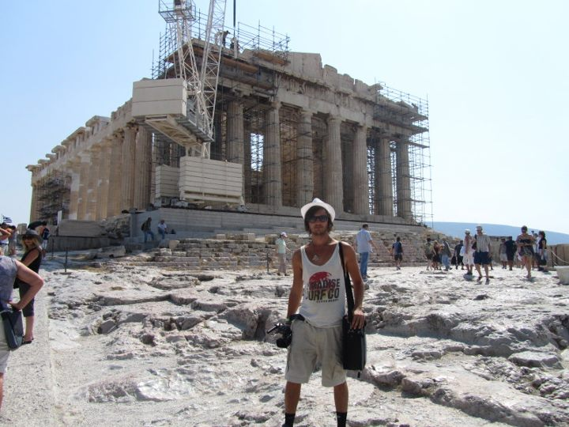

Athens
What to See
Athens is a treasure trove of ancient and modern attractions. Must-see sights include the Acropolis, Parthenon, Ancient Agora, Plaka neighborhood, and the National Archaeological Museum.
A Brief History of the City
Athens is one of the world's oldest cities, with a history spanning over 3,400 years. It is considered the cradle of Western civilization and democracy, playing a pivotal role in the development of art, philosophy, and politics.
Top 10 Attractions
- Acropolis and Parthenon
- Ancient Agora
- National Archaeological Museum
- Plaka Neighborhood
- Mount Lycabettus
- Syntagma Square
- Temple of Olympian Zeus
- Monastiraki Flea Market
- Panathenaic Stadium
- Philopappos Hill
What to Bring
- Comfortable walking shoes
- Weather-appropriate clothing
- Camera or smartphone for photos
- Guidebook or map
- Travel adapter (Type C or Type F socket)
- Reusable water bottle
- Personal medications
- Sun protection (sunscreen, hat, sunglasses)
- Light jacket for cooler evenings
- Basic Greek phrases
Currency
The currency in Athens is the Euro (€).
Best Time to Visit
Spring (April to June) and Autumn (September to October) offer pleasant weather and fewer tourists. Summer is hot and busy, ideal for beach activities, while winter is mild and perfect for exploring indoor attractions.
Fun Facts
- The Acropolis is a UNESCO World Heritage Site and a symbol of ancient Greek civilization.
- Athens was the birthplace of philosophers like Socrates, Plato, and Aristotle.
- The city has over 2,000 monuments, reflecting its rich history.
- Athens hosted the first modern Olympic Games in 1896.
- The Greek National Opera is one of the city's premier cultural institutions.